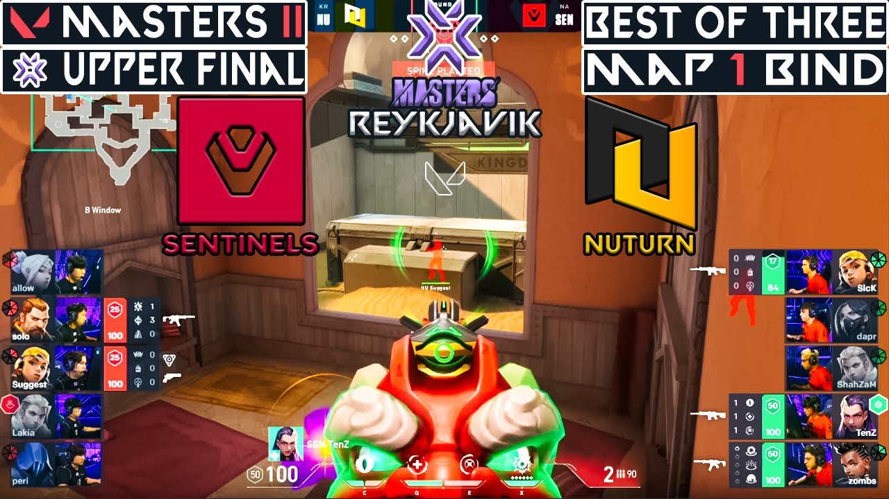

Have you ever thought of how good players like Tenz and Ethos become good. The key is practice. They play alot and they therefor get more and more experince wich then makes them better at the game. There are 23 ranks in Valorant, including unranked. The average rank is bronze/silver and this guide will help you to get over those ranks.
Aiming is one of the most important things in Valorant. Valorant is a first person shooter game where the objektive is to kill enemy players and eighter defuse, defend og plant a bomb. The way you improve your aim is by practising. You can practise by watching youtube tutorials or by simply going into the shooting range and shoot headshots at the bots.
Crosshairplacement is one thing that filters out noob bronze-players to silver- and gold-players. Crosshairplacement is a way of playing were your crosshair is on the enemy's head at any point in the head. That means you only have to move your mouse to the left or right to hit their head. This makes both your aim easier, and you will start to win more fights against unexpected enimies.
Gamesense is an important factor in Valorant. It is actually iportant in every game. You build gamesense as you play. The more you play, the better gamesense you get. Gamesense is a way of thinking, and knowing where the enemy is. It is when they for example rush on A site, and then get two kills. What they would do is rotate to B site, but you don't know for sure. Thats when the gamesense get's in the game. You know that they have three options: they can rotate to the other site. They can push A site, or they can fake rotate, and go A site. You would then just stay A site and wait for them, but actually what you would do, is sending one or two teammates to offagnelse in their rotation, and that would maybe give your team a pick or two..
Many people complain that it's their teammates fault that they don't rankup. Well, here is a solution: baiting. Batining is a were you run behind or with a teammate, and when they get shot on, you shoot at the enemy who's shooting at your teammate. When you do that you're almost guaranteed a trade or the enemy dying.
Example of some people doing everything said in this guide:
Other articles and a game: